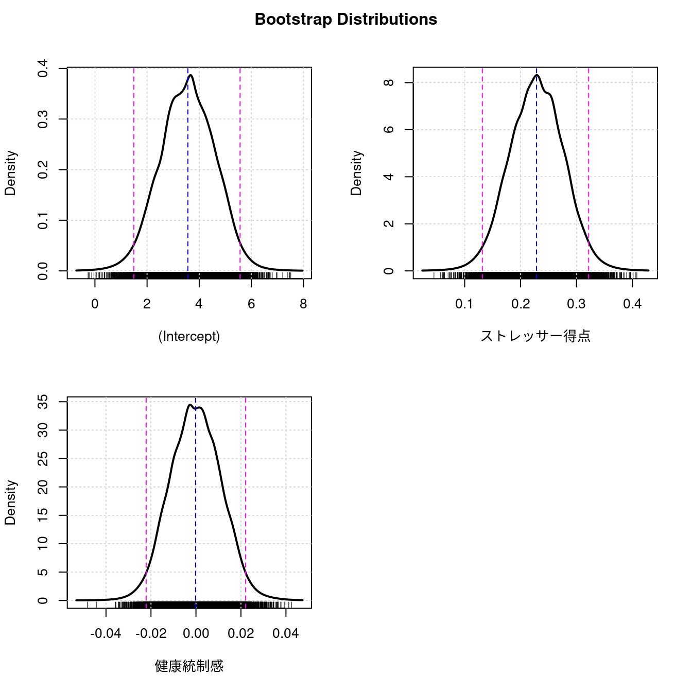

※本ページの内容はテキストの第１０章に相当します
本章では回帰分析について学びます。Rcmdrで実行した場合のコードと出力結果のみを記載し、手順の記載は省略しますので詳細はテキストを参照してください。
データの読み込み
- Rcmdrのメニューから［データ］-［データセットのロード…］を実行する
- ファイルダイアログで「
外来患者ストレス.RData」ファイルを選択する - アクティブデータセットが
PatientStressになっていることを確認する
10.1 回帰モデルとは何か（P173）
10.2 回帰モデルの当てはめ（P179）
10.2.1 線形回帰（P179）
Call:
lm(formula = ストレス反応 ~ ストレッサー得点, data = PatientStress)
Residuals:
Min 1Q Median 3Q Max
-6.7497 -1.8334 -0.2208 1.7854 6.8829
Coefficients:
Estimate Std. Error t value Pr(>|t|)
(Intercept) 3.55031 0.38024 9.337 < 2e-16 ***
ストレッサー得点 0.22853 0.04806 4.755 2.95e-06 ***
---
Signif. codes: 0 '***' 0.001 '**' 0.01 '*' 0.05 '.' 0.1 ' ' 1
Residual standard error: 2.687 on 335 degrees of freedom
Multiple R-squared: 0.06323, Adjusted R-squared: 0.06044
F-statistic: 22.61 on 1 and 335 DF, p-value: 2.949e-06モデル - 信頼医区間
car::Confint(RegModel.1, level = 0.95) Estimate 2.5 % 97.5 %
(Intercept) 3.5503052 2.802338 4.2982727
ストレッサー得点 0.2285298 0.133996 0.3230637
相関
グラフ - 散布図
car::scatterplot(ストレス反応~ストレッサー得点, regLine=TRUE, smooth=FALSE,
boxplots=FALSE, data=PatientStress)
Call:
lm(formula = ストレス反応 ~ ストレッサー得点 +
健康統制感, data = PatientStress)
Residuals:
Min 1Q Median 3Q Max
-6.7488 -1.8323 -0.2206 1.7867 6.8849
Coefficients:
Estimate Std. Error t value Pr(>|t|)
(Intercept) 3.5639982 1.0523008 3.387 0.000791 ***
ストレッサー得点 0.2285325 0.0481304 4.748 3.05e-06 ***
健康統制感 -0.0001499 0.0107407 -0.014 0.988871
---
Signif. codes: 0 '***' 0.001 '**' 0.01 '*' 0.05 '.' 0.1 ' ' 1
Residual standard error: 2.691 on 334 degrees of freedom
Multiple R-squared: 0.06323, Adjusted R-squared: 0.05762
F-statistic: 11.27 on 2 and 334 DF, p-value: 1.83e-05統計量 - ブートストラップ信頼区間
.bs.samples <- car::Boot(RegModel.2, R=10000, method="case") 要求されたパッケージ boot をロード中です 統計量 - ブートストラップ信頼区間

Bootstrap bca confidence intervals
2.5 % 97.5 %
(Intercept) 1.49965579 5.60175194
ストレッサー得点 0.13331295 0.32183437
健康統制感 -0.02227164 0.0222411310.2.2 線形モデル（P189）
統計量 - モデルへの適合 - 線形モデル
Call:
lm(formula = ストレス反応 ~ 日常苛立ち, data = PatientStress)
Residuals:
Min 1Q Median 3Q Max
-7.8138 -1.4475 0.0805 1.4749 6.0547
Coefficients:
Estimate Std. Error t value Pr(>|t|)
(Intercept) 3.5251 0.2136 16.505 < 2e-16 ***
日常苛立ち1 1.5280 0.3257 4.691 3.97e-06 ***
日常苛立ち3 2.5857 0.3469 7.453 7.94e-13 ***
日常苛立ち6 4.2888 0.3720 11.528 < 2e-16 ***
---
Signif. codes: 0 '***' 0.001 '**' 0.01 '*' 0.05 '.' 0.1 ' ' 1
Residual standard error: 2.32 on 333 degrees of freedom
Multiple R-squared: 0.3056, Adjusted R-squared: 0.2994
F-statistic: 48.85 on 3 and 333 DF, p-value: < 2.2e-16モデル - 信頼医区間
car::Confint(LinearModel.1, level = 0.95) Estimate 2.5 % 97.5 %
(Intercept) 3.525073 3.1049506 3.945196
日常苛立ち1 1.528018 0.8873007 2.168735
日常苛立ち3 2.585738 1.9032632 3.268213
日常苛立ち6 4.288765 3.5569210 5.020609統計量 - モデルへの適合 - 線形モデル
Call:
lm(formula = ストレス反応 ~ ストレッサー得点 +
健康統制感 + 日常苛立ち + 性別 + 年齢コード,
data = PatientStress)
Residuals:
Min 1Q Median 3Q Max
-7.0228 -1.4035 -0.0337 1.5081 6.4263
Coefficients:
Estimate Std. Error t value Pr(>|t|)
(Intercept) 1.249051 0.912855 1.368 0.172161
ストレッサー得点 0.076017 0.041277 1.842 0.066433 .
健康統制感 0.021266 0.009091 2.339 0.019919 *
日常苛立ち1 1.308106 0.312272 4.189 3.61e-05 ***
日常苛立ち3 2.172647 0.339295 6.403 5.28e-10 ***
日常苛立ち6 3.592491 0.379275 9.472 < 2e-16 ***
性別女 0.804334 0.252173 3.190 0.001563 **
年齢コード2 0.082064 0.379132 0.216 0.828770
年齢コード3 -1.096353 0.310151 -3.535 0.000467 ***
年齢コード4 -1.775304 0.394404 -4.501 9.41e-06 ***
---
Signif. codes: 0 '***' 0.001 '**' 0.01 '*' 0.05 '.' 0.1 ' ' 1
Residual standard error: 2.186 on 327 degrees of freedom
Multiple R-squared: 0.3947, Adjusted R-squared: 0.3781
F-statistic: 23.69 on 9 and 327 DF, p-value: < 2.2e-1610.3 モデル診断（P197）
モデル - グラフ - Influence plot
car::influencePlot(LinearModel.2, id=list(method="noteworthy", n=2))
StudRes Hat CookD
18 -3.330199 0.04048919 0.0453974131
74 3.033107 0.03689499 0.0343805895
141 0.159330 0.06877515 0.0001880478
271 -1.788174 0.06809605 0.023209263410.3.1 数値によるモデル診断
モデル - 数値による診断 - 分散拡大要因
GVIF Df GVIF^(1/(2*Df))
ストレッサー得点 1.114436 1 1.055669
健康統制感 1.085463 1 1.041856
日常苛立ち 1.209852 3 1.032259
性別 1.024580 1 1.012215
年齢コード 1.221009 3 1.033840 (Intercept) ストレッサー得点 健康統制感 日常苛立ち1
(Intercept) 1.000 -0.278 -0.886 -0.132
ストレッサー得点 -0.278 1.000 -0.041 -0.106
健康統制感 -0.886 -0.041 1.000 0.001
日常苛立ち1 -0.132 -0.106 0.001 1.000
日常苛立ち3 -0.188 -0.132 0.071 0.425
日常苛立ち6 -0.114 -0.264 0.047 0.403
性別女 -0.186 0.058 -0.019 -0.022
年齢コード2 -0.136 0.023 -0.002 0.100
年齢コード3 -0.165 0.120 -0.042 0.119
年齢コード4 0.076 0.044 -0.244 0.042
日常苛立ち3 日常苛立ち6 性別女 年齢コード2 年齢コード3
(Intercept) -0.188 -0.114 -0.186 -0.136 -0.165
ストレッサー得点 -0.132 -0.264 0.058 0.023 0.120
健康統制感 0.071 0.047 -0.019 -0.002 -0.042
日常苛立ち1 0.425 0.403 -0.022 0.100 0.119
日常苛立ち3 1.000 0.412 -0.035 0.100 0.168
日常苛立ち6 0.412 1.000 -0.070 0.122 0.166
性別女 -0.035 -0.070 1.000 0.093 0.087
年齢コード2 0.100 0.122 0.093 1.000 0.284
年齢コード3 0.168 0.166 0.087 0.284 1.000
年齢コード4 0.131 0.185 0.068 0.226 0.301
年齢コード4
(Intercept) 0.076
ストレッサー得点 0.044
健康統制感 -0.244
日常苛立ち1 0.042
日常苛立ち3 0.131
日常苛立ち6 0.185
性別女 0.068
年齢コード2 0.226
年齢コード3 0.301
年齢コード4 1.000モデル - 数値による診断 - ブルーシュ・ベーガンの分散の不均一性の検定
lmtest::bptest(ストレス反応 ~ ストレッサー得点 + 健康統制感
+ 日常苛立ち + 性別 + 年齢コード,
varformula = ~ fitted.values(LinearModel.2),
studentize=TRUE, data=PatientStress)
studentized Breusch-Pagan test
data: ストレス反応 ~ ストレッサー得点 + 健康統制感 + 日常苛立ち + 性別 + 年齢コード
BP = 1.7599, df = 1, p-value = 0.184610.3.2 複雑な線形モデルの回帰分析（P209）
統計量 - モデルへの適合 - 線形モデル
Call:
lm(formula = ストレス反応 ~ ストレッサー得点 *
性別 + 健康統制感 + 日常苛立ち + 年齢コード,
data = PatientStress)
Residuals:
Min 1Q Median 3Q Max
-7.0423 -1.3942 -0.0425 1.5039 6.4069
Coefficients:
Estimate Std. Error t value Pr(>|t|)
(Intercept) 1.168445 0.968560 1.206 0.228548
ストレッサー得点 0.090062 0.069412 1.297 0.195378
性別女 0.960755 0.670401 1.433 0.152786
健康統制感 0.021024 0.009155 2.297 0.022280 *
日常苛立ち1 1.306828 0.312761 4.178 3.77e-05 ***
日常苛立ち3 2.175033 0.339914 6.399 5.44e-10 ***
日常苛立ち6 3.598807 0.380646 9.454 < 2e-16 ***
年齢コード2 0.082958 0.379693 0.218 0.827186
年齢コード3 -1.104739 0.312375 -3.537 0.000464 ***
年齢コード4 -1.774085 0.395000 -4.491 9.84e-06 ***
ストレッサー得点:性別女 -0.021415 0.085020 -0.252 0.801293
---
Signif. codes: 0 '***' 0.001 '**' 0.01 '*' 0.05 '.' 0.1 ' ' 1
Residual standard error: 2.189 on 326 degrees of freedom
Multiple R-squared: 0.3948, Adjusted R-squared: 0.3763
F-statistic: 21.27 on 10 and 326 DF, p-value: < 2.2e-16統計量 - モデルへの適合 - 線形モデル
Call:
lm(formula = ストレス反応 ~ ストレッサー得点 +
性別 + ストレッサー得点:性別 + 健康統制感 +
日常苛立ち + 年齢コード, data = PatientStress)
Residuals:
Min 1Q Median 3Q Max
-7.0423 -1.3942 -0.0425 1.5039 6.4069
Coefficients:
Estimate Std. Error t value Pr(>|t|)
(Intercept) 1.168445 0.968560 1.206 0.228548
ストレッサー得点 0.090062 0.069412 1.297 0.195378
性別女 0.960755 0.670401 1.433 0.152786
健康統制感 0.021024 0.009155 2.297 0.022280 *
日常苛立ち1 1.306828 0.312761 4.178 3.77e-05 ***
日常苛立ち3 2.175033 0.339914 6.399 5.44e-10 ***
日常苛立ち6 3.598807 0.380646 9.454 < 2e-16 ***
年齢コード2 0.082958 0.379693 0.218 0.827186
年齢コード3 -1.104739 0.312375 -3.537 0.000464 ***
年齢コード4 -1.774085 0.395000 -4.491 9.84e-06 ***
ストレッサー得点:性別女 -0.021415 0.085020 -0.252 0.801293
---
Signif. codes: 0 '***' 0.001 '**' 0.01 '*' 0.05 '.' 0.1 ' ' 1
Residual standard error: 2.189 on 326 degrees of freedom
Multiple R-squared: 0.3948, Adjusted R-squared: 0.3763
F-statistic: 21.27 on 10 and 326 DF, p-value: < 2.2e-1610.4 モデルの選択（P212）
10.4.1 分散分析によるモデルの比較（P213）
モデル - 仮設検定 - 2つのモデルを比較
anova(LinearModel.1, LinearModel.2)Analysis of Variance Table
Model 1: ストレス反応 ~ 日常苛立ち
Model 2: ストレス反応 ~ ストレッサー得点 + 健康統制感 +
日常苛立ち + 性別 + 年齢コード
Res.Df RSS Df Sum of Sq F Pr(>F)
1 333 1792.3
2 327 1562.3 6 230.01 8.0237 4.304e-08 ***
---
Signif. codes: 0 '***' 0.001 '**' 0.01 '*' 0.05 '.' 0.1 ' ' 1モデル - 仮設検定 - 2つのモデルを比較
anova(LinearModel.2, LinearModel.3)Analysis of Variance Table
Model 1: ストレス反応 ~ ストレッサー得点 + 健康統制感 +
日常苛立ち + 性別 + 年齢コード
Model 2: ストレス反応 ~ ストレッサー得点 + 性別 + ストレッサー得点:性別 +
健康統制感 + 日常苛立ち + 年齢コード
Res.Df RSS Df Sum of Sq F Pr(>F)
1 327 1562.3
2 326 1562.0 1 0.30399 0.0634 0.801310.4.2 AICによるモデル選択（P215）
モデル - 逐次モデル選択…
RcmdrMisc::stepwise(LinearModel.3, direction='backward/forward', criterion='AIC')
Direction: backward/forward
Criterion: AIC
Start: AIC=538.84
ストレス反応 ~ ストレッサー得点 + 性別 + ストレッサー得点:性別 +
健康統制感 + 日常苛立ち + 年齢コード
Df Sum of Sq RSS AIC
- ストレッサー得点:性別 1 0.30 1562.3 536.91
<none> 1562.0 538.84
- 健康統制感 1 25.27 1587.3 542.25
- 年齢コード 3 138.36 1700.4 561.44
- 日常苛立ち 3 465.22 2027.2 620.69
Step: AIC=536.91
ストレス反応 ~ ストレッサー得点 + 性別 + 健康統制感 +
日常苛立ち + 年齢コード
Df Sum of Sq RSS AIC
<none> 1562.3 536.91
- ストレッサー得点 1 16.20 1578.5 538.38
+ ストレッサー得点:性別 1 0.30 1562.0 538.84
- 健康統制感 1 26.15 1588.5 540.50
- 性別 1 48.61 1610.9 545.23
- 年齢コード 3 138.06 1700.4 559.44
- 日常苛立ち 3 465.67 2028.0 618.82
Call:
lm(formula = ストレス反応 ~ ストレッサー得点 +
性別 + 健康統制感 + 日常苛立ち + 年齢コード,
data = PatientStress)
Coefficients:
(Intercept) ストレッサー得点 性別女 健康統制感
1.24905 0.07602 0.80433 0.02127
日常苛立ち1 日常苛立ち3 日常苛立ち6 年齢コード2
1.30811 2.17265 3.59249 0.08206
年齢コード3 年齢コード4
-1.09635 -1.77530 10.5 解析結果の保存（P219）
モデル - 計算結果をデータとして保存
PatientStress<- within(PatientStress, {
fitted.LinearModel.3 <- fitted(LinearModel.3) # 予測値
residuals.LinearModel.3 <- residuals(LinearModel.3) # 残渣
rstudent.LinearModel.3 <- rstudent(LinearModel.3) # スチューデント化残渣
hatvalues.LinearModel.3 <- hatvalues(LinearModel.3) # ハット地（てこ比）
cooks.distance.LinearModel.3 <- cooks.distance(LinearModel.3) # クックの距離
obsNumber <- 1:nrow(PatientStress) # インデックス番号
})保存結果はアクティブデータセットに追加されますので、必要に応じてデータセットを（save()関数を使用して）保存してください。